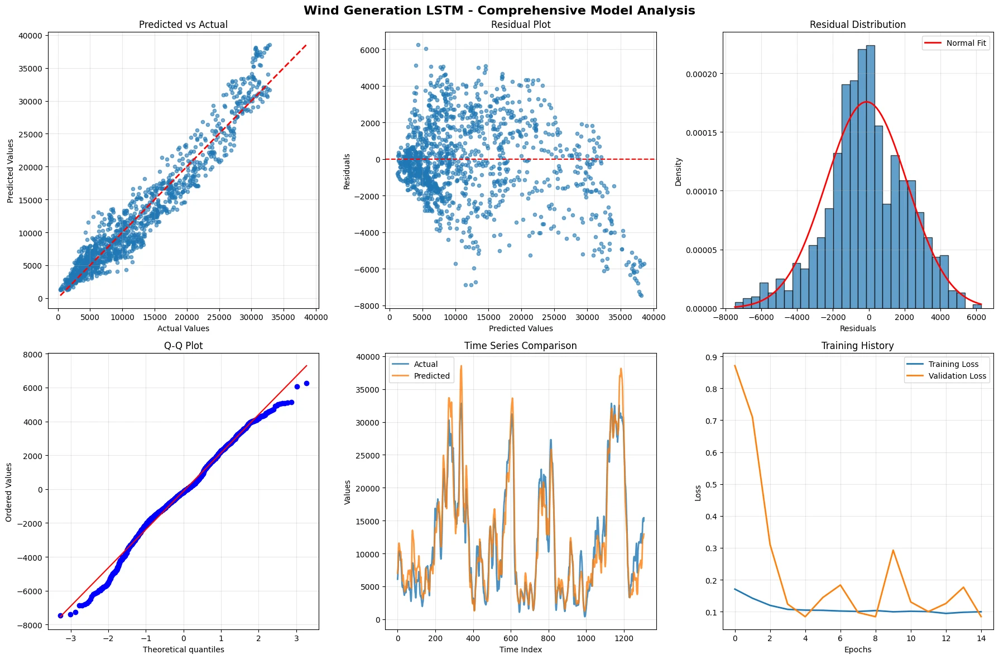

Screenshots


The problem
Grid operators must balance supply and demand hour by hour, and renewables make both harder to predict. At the same time, detailed city-scale energy data is locked behind regulation, privacy rules and corporate confidentiality.
| Objective | Target | Result |
|---|---|---|
| Forecast demand at 1, 6 and 24 hours | R² of 90% or more | 95.9%, met |
| Wavelet-enhanced wind forecasting | R² above 80% | 93.1%, met |
| Transfer the demand model to price | Show it generalises | 70.3% on a volatile target |
| Build a London-scale dataset | Train without restricted data | 1,051,200 rows by 125 features |
What I built
A synthetic London energy dataset
- Modelled on London (9.5 million people, 22 GW peak demand, 3.5 GW renewables): ten years of hourly data across 12 boroughs.
- Weather with realistic daily and seasonal cycles, wind from turbine power curves, and solar de-rated for heat and panel ageing.
- Demand from six sectors plus heating and cooling load, and prices from a formation model with demand, renewables, gas, carbon and volatility.
Three forecasting models
The demand network (830,963 parameters). Parallel kernels see short, medium and daily-scale patterns at once.
- Demand (830,963 parameters). Three parallel convolutions for short, medium and daily patterns, stacked bidirectional LSTMs, multi-head attention, and forecasts for 1, 6 and 24 hours.
- Price. The same architecture transferred, with stronger regularisation and a loss blended for price spikes.
- Wind (54,401 parameters). Wavelet decomposition of real 2016 German wind data, then a compact two-layer LSTM.
Results
| Model | Horizon | R² | Mean absolute error |
|---|---|---|---|
| Demand | 1 h, 6 h, 24 h | 95.7%, 96.8%, 95.1% | 2,754, 2,432, 2,990 MW |
| Price | 1 h, 6 h, 24 h | 69.7%, 69.8%, 71.3% | £8.11, £8.11, £7.94 per MWh |
| Wind | Test set, 1,307 h | 93.1% | 1,754 MW |
Tech stack
| Modelling | Python, TensorFlow and Keras (Conv1D, BiLSTM, multi-head attention), PyWavelets |
|---|---|
| Data | pandas, NumPy, scikit-learn scalers; Open Power System Data (ENTSO-E) for German wind |
| Evaluation | R², MAE, RMSE, MAPE, index of agreement, residual and error-percentile analysis |
Impact
- All four dissertation objectives met; MSc awarded with Distinction.
- Showed that an architecture designed for demand transfers to price with minimal changes.
- Error analysis found the wind model over-estimates by about 15.5% in high-wind periods, a bias that calibration could remove, documented as a limitation.
What I learned
- Data and evaluation decide whether a number means anything. Next steps: validate on real utility data, forecast wind from history only, and report baselines alongside every R².
- Read the full dissertation (nine pages).